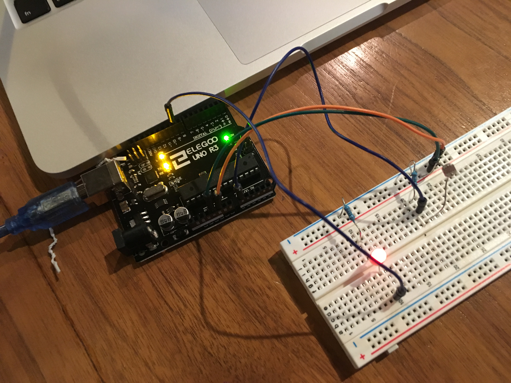
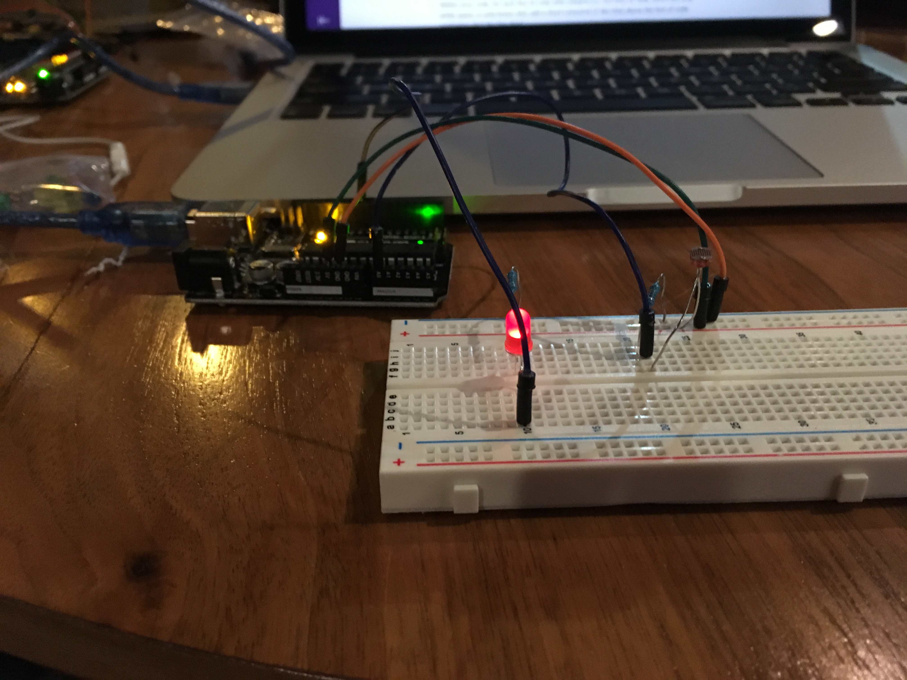
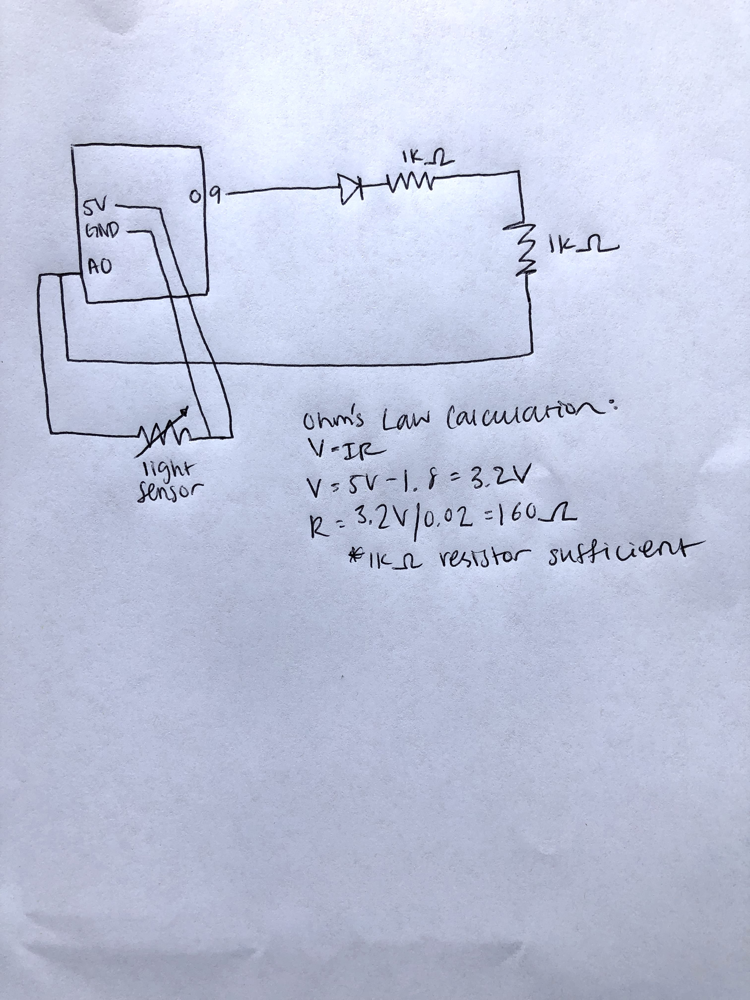

Rachel Ren's Assignment 3!


 
Above are images of the circuit.  Above are the schematics for the light sensor circuit: I chose to use 1k resistors to handle the the maximum current for the LEDs. The calculation can be seen that the LED would require 160 ohm's of resistor, so I figured the 1k resistor would be sufficient. Here is all the documentation for assignment 3:
// These constants won't change. They're used to give names to the pins used:
// Analog input pin that the potentiometer is attached to
const int analogInPin = A0;
// Analog output pin that the LED is attached to
const int analogOutPin = 9;
// value read from the pot
int sensorValue = 0;
// value output to the PWM (analog out)
int outputValue = 0;
void setup() {
// initialize serial communications at 9600 bps:
Serial.begin(9600);
}
void loop() {
// read the analog in value:
sensorValue = analogRead(analogInPin);
// map it to the range of the analog out:
outputValue = map(sensorValue, 0, 2000, 0, 400);
// change the analog out value:
analogWrite(analogOutPin, outputValue);
// print the results to the Serial Monitor:
// tests if sensorValue is less than 20
if (sensorValue < 20) {
// if sensorValue is less than 20, prints dim
Serial.print("sensor is dim - ");
}
// tests if sensorValue is greater than 19
if (sensorValue > 19) {
// if sensorValue is greater than 29, prints bright
Serial.print("sensor is bright - ");
}
// prints sensorValue
Serial.print(sensorValue);
// prints output text
Serial.print("\t output is ");
// prints outputValue
Serial.println(outputValue);
// wait 2 milliseconds before the next loop for the analog-to-digital
// converter to settle after the last reading:
delay(2);
}